Harry Dale Spratt 1890 - 1953
[ Home ] | [ Calendar ] | [ Surnames Index ] | [ Errors ] | [ Family History ]A carter and motor driver and the child of John Spratt (an agricultural labourer) and Sophia Dale, Harry Spratt, the great-uncle of Nigel Horne, was born in St Nicholas-at-Wade, Kent, England on 21 Jun 18901,2,3,4,5,6,7,8,9, was baptised there on 20 Jul 1890 and married Edith Anstey (with whom he had 1 child, Violet Lilian) at All Saints Church, Westbrook, Kent, England on 22 Nov 191310.
During his life, he was living at Shuart Cottage, Podden Street in St Nicholas-at-Wade on 5 Apr 189113; at Cottage, Nash Court, Garlinge, Kent on 31 Mar 190111 - less than a mile from his sister May Spratt who was living at 2 Nash Court Cottage, Nash Road, Margate, Kent and on 2 Apr 191112; and at 1 Hill View Cottages, Twenties, Shottendane Road, Margate, Kent in 19156, in 1923, in 1929 and on 29 Sept 19394 which is where he died on 7 Oct 19537. On 10 Dec 1915 he was serving in the army (soldier Number: 27842, Rank: Private, Corps: Royal West Kent Regiment; Later: Soldier Number: 46824, Corps: Oxfordshire and Buckinghamshire Light Infantry; Awarded British War Medal).
Parents
- John was born on 26 Mar 1852
- Sophia was born on 15 Nov 1853
Children
- Violet Lilian was born on 2 Jul 1921
Citations
- 1891 England Census Online publication - Provo, UT, USA: The Generations Network, Inc., 2005.Original data - Census Returns of England and Wales, 1891. Kew, Surrey, England: The National Archives of the UK (TNA): Public Record Office (PRO), 1891. Data imaged from The National
- 1901 England Census Online publication - Provo, UT, USA: The Generations Network, Inc., 2005.Original data - Census Returns of England and Wales, 1901. Kew, Surrey, England: The National Archives of the UK (TNA): Public Record Office (PRO), 1901. Data imaged from the National
- 1911 England Census Online publication - Provo, UT, USA: Ancestry.com Operations, Inc., 2011.Original data - Census Returns of England and Wales, 1911. Kew, Surrey, England: The National Archives of the UK (TNA), 1911. Data imaged from the National Archives, London, England.
- 1939 Register - Findmypast (was the head of the household)
- British Army Service Records - Findmypast
- British Army WWI Service Records, 1914-1920 Online publication - Provo, UT, USA: Ancestry.com Operations Inc, 2008.Original data - War Office: Soldiers' Documents, First World War 'Burnt Documents' (Microfilm Copies); (The National Archives Microfilm Publication WO363); Records created or inherited
- England & Wales, Death Index: 1984-2005 Online publication - Provo, UT, USA: The Generations Network, Inc., 2007.Original data - General Register Office. England and Wales Civil Registration Indexes. London, England: General Register Office. © Crown copyright. Published by permission of the Cont
- England & Wales, FreeBMD Birth Index, 1837-1915 Online publication - Provo, UT, USA: The Generations Network, Inc., 2006.Original data - General Register Office. England and Wales Civil Registration Indexes. London, England: General Register Office. © Crown copyright. Published by permission of the Cont
- Public Member Trees Online publication - Provo, UT, USA: The Generations Network, Inc., 2006.Original data - Family trees submitted by Ancestry members.Original data: Family trees submitted by Ancestry members.
- England & Wales, FreeBMD Marriage Index: 1837-1915 Online publication - Provo, UT, USA: The Generations Network, Inc., 2006.Original data - General Register Office. England and Wales Civil Registration Indexes. London, England: General Register Office. © Crown copyright. Published by permission of the Cont
- 1901 England, Wales & Scotland Census - Findmypast (was age 10 and the son of the head of the household)
- 1911 Census for England & Wales - Findmypast (was age 20 and the son of the head of the household)
- 1891 England, Wales & Scotland Census - Findmypast (was age 0 and the son of the head of the household)
Media
Harry Dale Spratt - probate
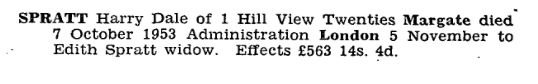
Harry Dale Spratt - WW1 - 1
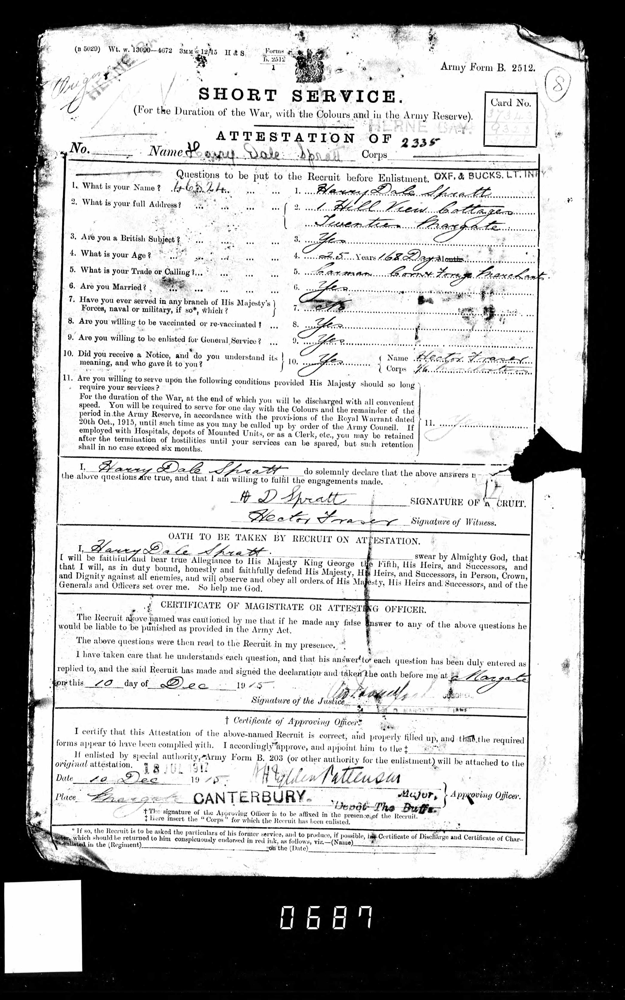
Harry Dale Spratt - WW1 - 2
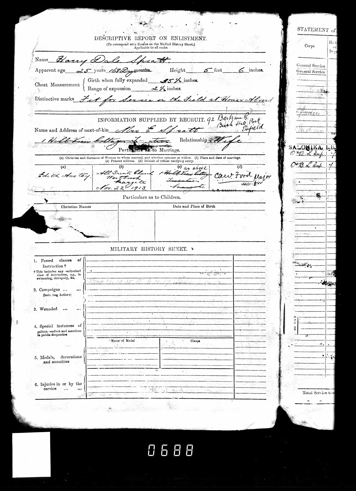
Harry Dale Spratt - WW1 - 3
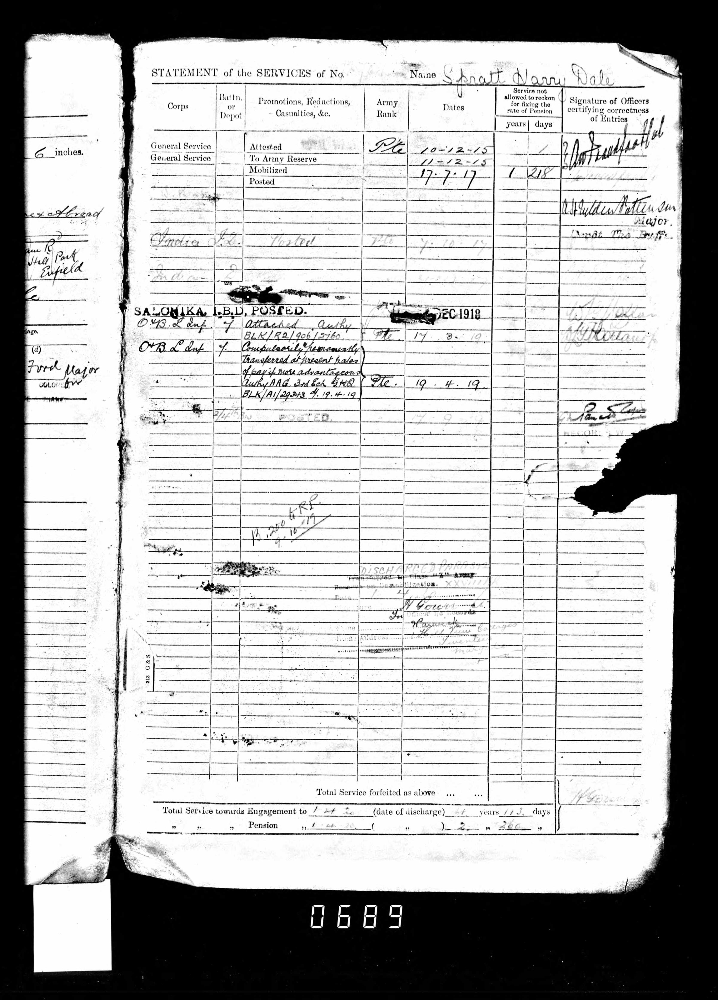
Harry Dale Spratt - WW1 - 4
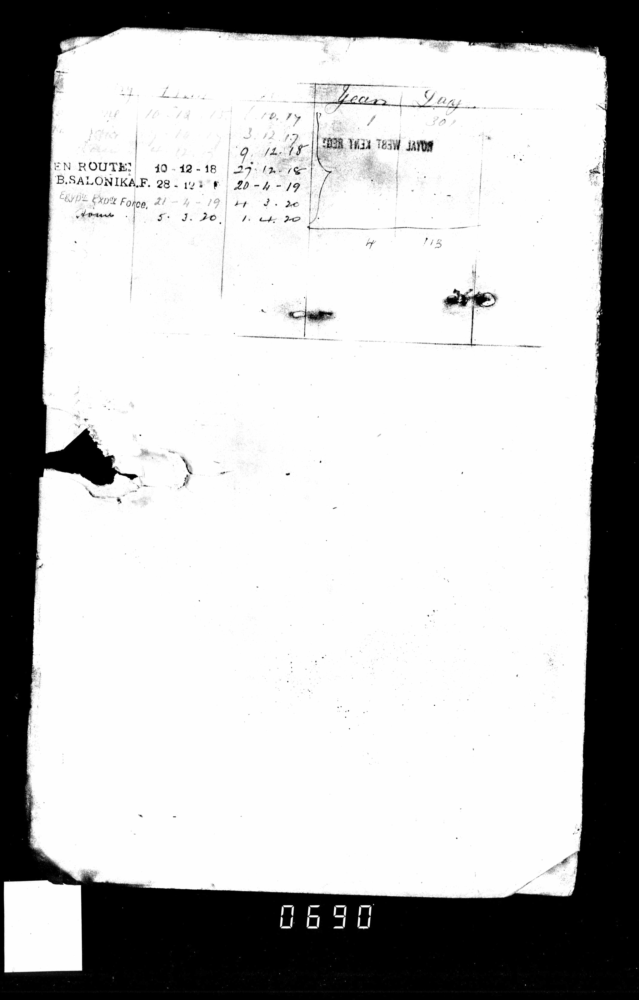
Harry Dale Spratt - WW1 - 5
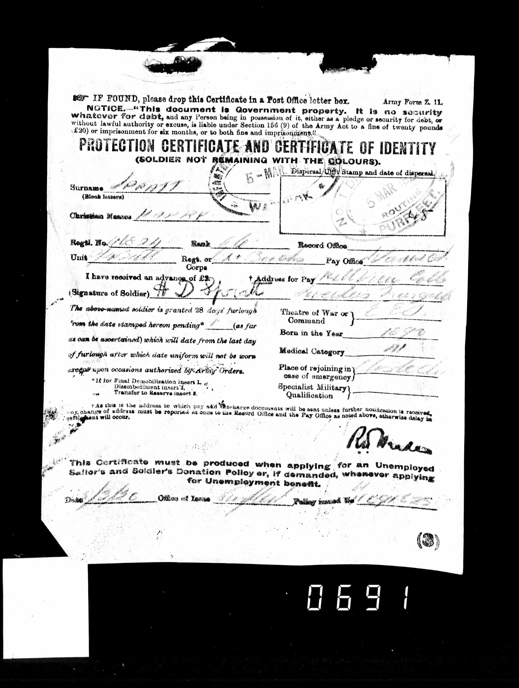
Harry Dale Spratt - WW1 - 6
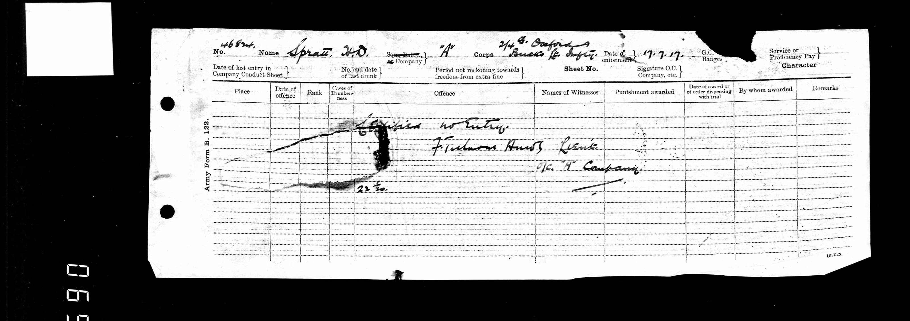
Harry Dale Spratt - WW1 - 7
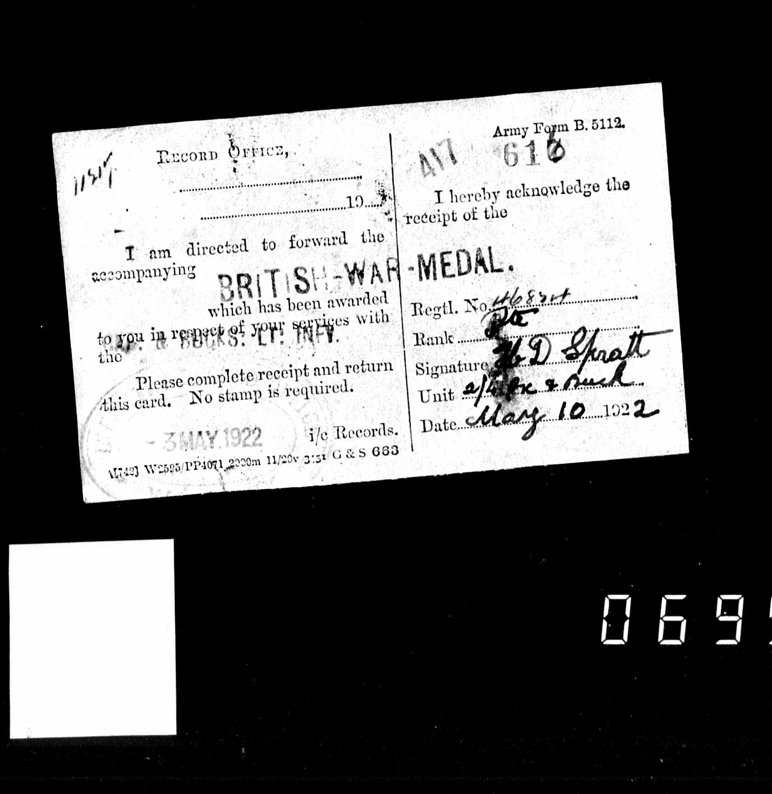
Thanet Advertiser 23 Jun 1922
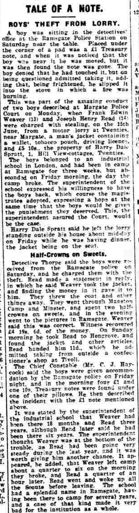
British War Medal and Victory Medal
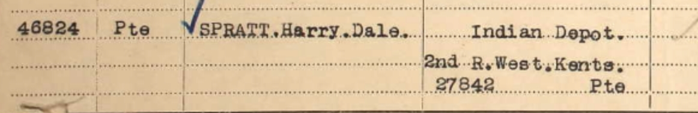
England & Wales deaths 1837-2007 - BMD/D/1953/4/AZ/000937/043
Kent, Canterbury Archdeaconry baptisms 1538-1912 - GBPRS/CANT/B/96802347
England & Wales births 1837-2006 - BMD/B/1890/3/AZ/000529/191
England & Wales marriages 1837-2008 - BMD/M/1913/4/AZ/001079/104
1939 Register Transcription - TNA-R39-1752-1752G-016-24
British Army Service Records 1914-1920 Transcription - GBM-WO363-4-7329419-32-691
England, Births & Baptisms 1538-1975 Transcription - R_884659383
England, Births & Baptisms 1538-1975 Transcription - R_884948214
1891 England, Wales & Scotland Census Transcription - GBC-1891-0005855070
1939 Register Transcription - TNA-R39-1752-1752G-016-23
Britain, Campaign, Gallantry & Long Service Medals & Awards - GBM/MCI/4217074
Family Tree
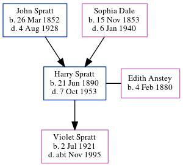Map
Generated by ged2site. Last updated on Jul 3, 2024
Known Issues
Residence record for 1929 contains no citation
Residence record for 1923 contains no citation
Location for 31 Mar 1901 (Cottage, Nash Court, Garlinge, Kent, England) differs from mother's (2 Nash Court Cottage, Nash Road, Margate, Kent, England)
31 Mar 1901: Not living with either parent in childhood when aged 10
Listed in the residence for 1915, but spouse Edith Anstey is not
Listed in the residence for 1923, but spouse Edith Anstey is not
Listed in the residence for 1929, but spouse Edith Anstey is not
Location for "military service" on 10 Dec 1915 is empty